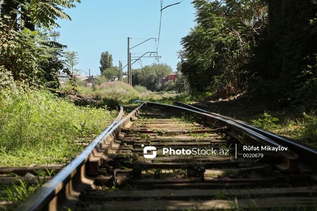
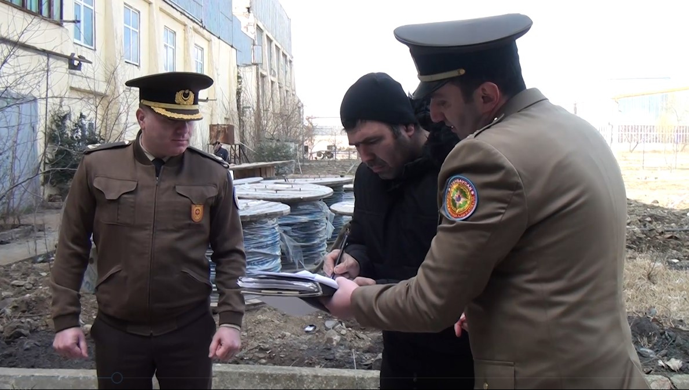

Son Xəbərlər
Xaçmaz dəmiryol stansiyasında ölümlə nəticələnən qəza baş verib
Bu gün saat 14:15-də “Azərbaycan Dəmir Yolları” (ADY) QSC-yə məxsus yol təmiri maşını (drezin) Xaçmaz stansiyasında hərəkətdə olarkən bir nəfər naməlum şəxs qəfil drezinin qarşısına çıxıb.
BAKU.WS bu barədə ADY-yə istinadən xəbər verir. Məlumata görə, maşinist təcili tormozlama aparsa da, məsafə az olduğundan toqquşma qaçılmaz olub və həmin şəxs hadisə nəticəsində dünyasını dəyişib.
Məlumata görə, maşinist təcili tormozlama aparsa da, məsafə az olduğundan toqquşma qaçılmaz olub və həmin şəxs hadisə nəticəsində dünyasını dəyişib.
Azərbaycanda icra başçısının müavinləri SAXLANILIB? - RƏSMİ AÇIQLAMA + YENİLƏNİB
Bu gün Gəncə Şəhər İcra Hakimiyyətində hüquq-mühafizə orqanlarının əməkdaşları tərəfindən xüsusi əməliyyat keçirilib.
BAKU.WS Sfera.az-a istinadən xəbər verir ki, əməliyyat zamanı Gəncə Şəhər İcra Hakimiyyəti başçısının birinci müavini Səməd Tomuyev və digər müavinlər, eləcə də Gəncə Şəhər İcra Hakimiyyəti başçısı Aparatının Memarlıq və tikinti şöbəsinin müdiri, Baş memar Elxan Məmmədov saxlanılıb.
Bakıda sexin fəaliyyəti dayandırıldı - FOTO/VİDEO
Fövqəladə Hallar Nazirliyinin Dövlət Yanğın Nəzarəti Xidməti səlahiyyətlərinə uyğun olaraq, ölkə ərazisində yanğın təhlükəsizliyinin təmin edilməsi məqsədilə zəruri tədbirlərin görülməsini davam etdirir.
Bu barədə BAKU.WS -ə FHN-in mətbuat xidmətindən bildirilib.
Bu çərçivədə, Dövlət Yanğın Nəzarəti Xidməti tərəfindən Bakı şəhəri, Sabunçu rayonu, Nəriman Nərimanov küçəsi, 1 ünvanında yerləşən “Az Metal İndustry Company” MMC-yə məxsus istehsalat sexində keçirilən yoxlama zamanı yanğın təhlükəsizliyi sahəsində çoxsaylı nöqsanların mövcud olduğu, həmin nöqsanların insan həyatı və ya sağlamlığına, ətraf mühitə və dövlətin əmlak maraqlarına birbaşa təhlükə yaratdığı müəyyən edilib. Belə ki:
- obyektdə avtomatik yanğınxəbərverici siqnalizasiya qurğuları və daxili yanğın su kranları quraşdırılmayıb;
- obyektdə propan tipli qaz balonlarından və standartlara uyğun olmayan qızdırıcı sobadan istifadə olunur;
- izolyasiya örtüyü zədəli və nasaz elektrik avadanlıqlarından istifadə edilməklə, elektrik avadanlıqları artıq yükləmədən və qısaqapanmadan mühafizə olunması üçün qoruyucu aparatlarla təmin edilməyib;
- elektrik təsərrüfatı “Elektrik Qurğularının Quraşdırılması Qaydası”nın tələblərinə uyğun quraşdırılmayıb və elektrik təsərrüfatına profilaktik baxış keçirilməyib;
- obyekt ilkin yanğınsöndürmə vasitələri ilə təmin olunmayıb və mövcud odsöndürən balonların tərkibi yenilənməyib.
Beləliklə, mövcud vəziyyət onu göstərir ki, obyektin istismarının davam etdirilməsi nəticəsində orada hər an baş verə biləcək yanğın qısa müddətdə genişlənərək faciəni qaçılmaz edəcək.
Qeyd olunanları nəzərə alaraq, yanğın təhlükəsizliyi norma və qaydalarının tələblərinin kobud pozulması faktları aşkar edilmiş Bakı şəhəri, Sabunçu rayonu, Nəriman Nərimanov küçəsi, 1 ünvanında yerləşən “Az Metal İndustry Company” MMC-yə məxsus istehsalat sexinin fəaliyyətinin dayandırılması barədə Qərar qəbul olunub və Qərarın bir nüsxəsi obyektin nümayəndəsinə təqdim edilib.